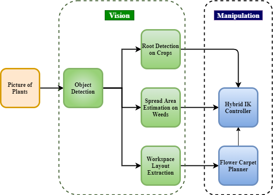
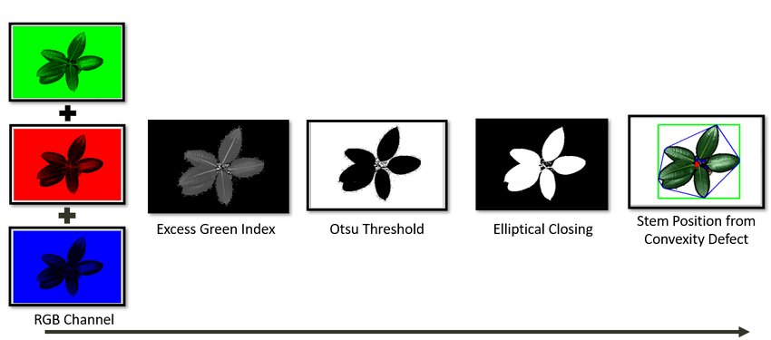
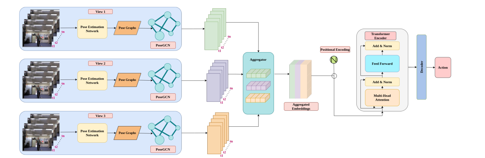
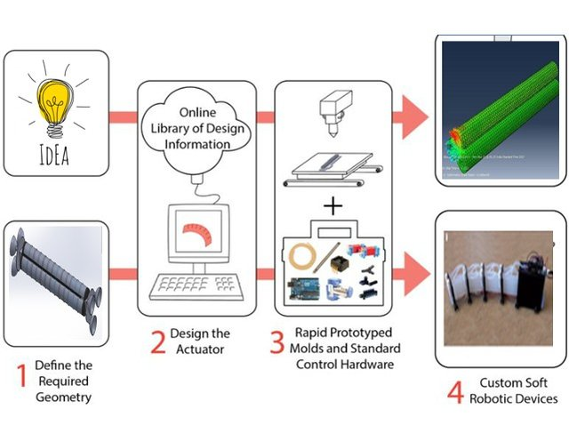
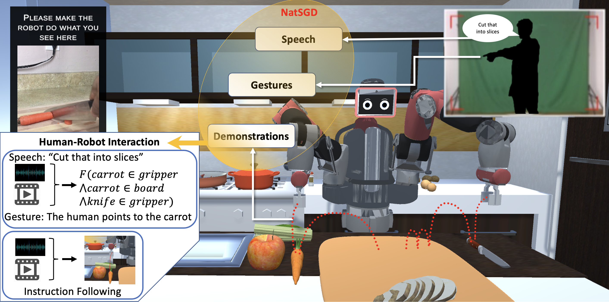
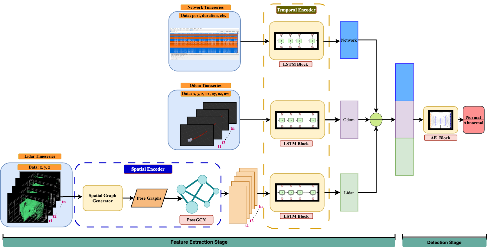
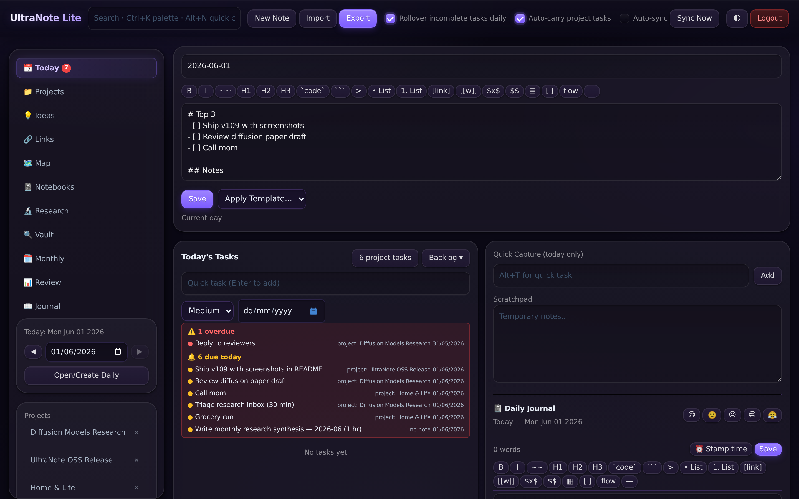
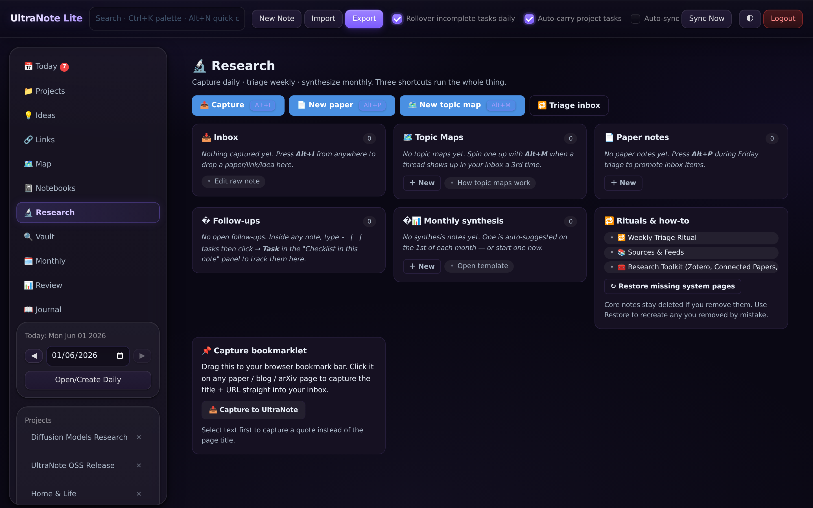
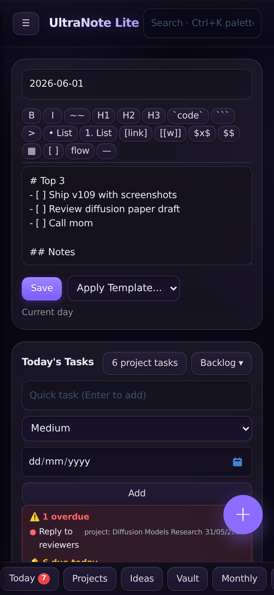

R&D engineer · first-principles design · technical storytelling
I build intelligent systems—and tell the stories hidden inside them.
I’m Tharun—an AI and robotics R&D engineer, researcher, and technical storyteller. I work from first principles to turn emerging models into real systems that perceive, learn, explain, and act beyond the lab.

EngineerResearcherStoryteller
Representation
Egocentric
policies
World models
for robotics
Human–robot
interaction
The through-line
How the work
evolved.
The path was not perfectly linear. In retrospect, each chapter supplied something the next one needed: models, interfaces, physical systems, and finally machines that learn from experience.
Finding signal—and making it useful
I began with a broad question: how can data become a useful decision or experience? Statistical forecasting grew into computer vision, soft robotics, human-facing AI, and my first perception systems built in ROS.
Rainfall · Water quality · Soft robot · My Style · Try-on · AI Cricket · ROSGiving perception a body
At IISc and UMD, models met cameras, manipulators, crops, and human instruction. I moved from ROS into ROS 2 as depth estimation, precision weeding, and an ambitious HRI study made perception physical.
Depth · Precision weeding · ROS → ROS 2 · Speech + gesture + demonstrationArchitecting multimodal autonomy
The focus widened from one model to the whole loop: fuse partial evidence, reason through uncertainty, and close perception into control or safety decisions across people, vehicles, UAVs, and cyber-physical systems.
PoseFusion · Fall detection · Auto-Platoon · TAR · Multimodal anomaly detectionRobotic intelligence for the unstructured world
Today, those threads converge in bimanual systems that manipulate deformable objects: multimodal perception, compliant control, demonstration-driven policies, digital twins, and closed-loop deployment on real workcells.
Deformables · Bimanual manipulation · Compliance · Learned policies · Sim-to-realBefore choosing a model, I ask:
01What is the irreducible problem?
02What must survive contact with reality?
03What should the system make legible to people?
Selected systems
Where the story
becomes a system.
A focused set of systems and technical modules shows how I move between research questions, architecture, human context, and physical deployment.
Robotic intelligence for unstructured manipulation
Research and engineering for bimanual manipulation of deformable objects—coupling multimodal perception, force-aware compliant control, human demonstrations, learned action policies, high-fidelity simulation, and real-world ROS 2 deployment.
Physical deployment


Hybrid IK for plant-safe planning
A plant is not a rigid obstacle with a clean bounding box. This system first estimates roots, leaf spread, and bed geometry, then couples learned plant geometry with a hybrid inverse-kinematics controller so the manipulator can reach weeds while reducing unintended contact.
See the living workspaceVision extracts stems, spread areas, and task boundaries—not merely object classes.Borrow from human craftA flower-carpet-inspired planner converts irregular plant layouts into an ordered manipulation sequence.Warp before solvingThe reachable workspace is reshaped around delicate geometry before hybrid IK selects a motion.
Explore the paper and figures

Architecture designed across two studiesAction recognition from partial evidence
I defined the core architecture across two studies: pose graphs encode spatial structure through GCNs, transformers model action over time, and attention fuses incomplete evidence across camera views. The work supported privacy-preserving fall detection and multi-view recognition under occlusion—then became the architectural starting point for my multimodal anomaly-detection work.
0.82 F1 under occlusion3 views fused semanticallyGCN → Transformer spatial to temporal
Software-latched multi-robot autonomy
A safety-aware leader–follower stack combining learned detection, feature-based tracking, monocular depth, Kalman state estimation, cooperative sensing, and explicit engage–disengage transitions.

Prototype stillPneumatic wall-climbing robot
A lightweight inspection prototype built around three single-bending pneumatic actuators—moving compliance from a control objective into the robot’s physical design.
View publication
Real UAV deployment
Track Anything Rapter · TAR
One target.
Many ways to specify it.
I co-developed a ROS 2 aerial system that accepts a click, box, image, or text query; combines foundation models for detection and segmentation; then closes the loop through visual servoing on a PX4-enabled VOXL2 M500 drone.
- 01Specifytext · image · click · box
- 02PerceiveDINO · CLIP · SAM
- 03Tracktarget pose · re-detection
- 04Actvisual servoing · PX4
Before the field had a recipe
Could a robot learn what a person means—not just what they say?
I pursued an imitation-learning policy with Snehesh Shrestha that fused human demonstrations, speech, and gestures into robot actions. I implemented the architecture as a research prototype, but the study did not reach reliable results or publication. In a still-nascent field and with limited support, the attempt exposed the hard problem early: human intent is distributed across modalities, timing, and context.
Why it belongs here: not as a claimed success, but as the experiment that connected my HRI work to today’s demonstration-driven robot learning. The later NatSGD work provides the research context; I do not claim authorship of that dataset or paper.

Related research contextNatSGD later formalized speech, gesture, and synchronized robot demonstrations at UMD. Image: Shrestha et al., CC BY 4.0.
Technical module · U-ASTROD
When one sensor lies, the others preserve the evidence.
For the ASTROD research program, I architected the fusion pipeline that encoded LiDAR, odometry, and network traffic independently before combining their learned representations in a shared anomaly detector.
The published system paired modality-specific spatiotemporal encoders with feature-wise reconstruction scoring. On real robot attacks, that scoring raised multimodal detection accuracy from 72% to 98% and retained 97% accuracy with half the training data.
Read publication
Independent product · 2025–now
A workspace built around how research actually happens.
UltraNote Lite sits outside my robotics work, but reveals the same instinct: understand the real workflow, remove accidental complexity, and build the whole system—not just its most visible feature.
UN
Local-first · self-hosted · open source
UltraNote Lite
“The notebook I wanted
but couldn’t find.”
A single-user workspace for daily notes, tasks, projects, journaling, and research capture. It occupies the space between heavyweight cloud tools and bare Markdown: fast enough for every thought, structured enough for long-running work, and owned entirely by the person using it.
Local firstNo cloud, account, telemetry, or data lock-in.Capture firstOne shortcut routes a task, note, journal entry, or idea.Agent readyPeople and coding agents share one durable project record.



01Capture anywhereDesktop · PWA · share sheet · bookmarklet
02Organize deliberatelyDaily · projects · research · wiki-links
03Keep the source of truthOne Node process · one owned data file
04Collaborate with agentsContext · query · search · validated updates
Work Atlas
The complete
body of work.
The selected work above establishes the narrative. This filterable archive preserves the systems, experiments, and earlier explorations that shaped it.
01
Current frontier
Robotic Intelligence for Unstructured Manipulation
Bimanual deformable-object manipulation through multimodal perception, compliance, learned policies, simulation, and real-world deployment.
02
Multimodal HRI · exploratory
Learning Actions from Human Intent
An early imitation-learning prototype fusing demonstrations, speech, and gestures into robot actions.
03
Plant–robot interaction
Vision-Guided Precision Weeding
One research program spanning weed perception, adaptive control, and learned hybrid-IK planning for precise collaborative plant interaction.
04
Connected autonomy
Auto-Platoon
Bio-inspired leader–follower coordination using software latching.
05
Multimodal UAV
Track Anything Rapter
Click, image, text, and box-conditioned tracking with foundation models and visual servoing.

06
Aerial robotics
ORB-SLAM Drone Localization
Vision-based localization for aerial asset inspection and management.
07
Aerial inspection
Surface Defect Detection
YOLO-based visual inspection for detecting structural surface defects.
08
Image understanding
SLIC Image Segmentation
Superpixel segmentation for compact and meaningful image representation.
09
Representation learning
Implicit Neural Representation
Image outpainting through coordinate-conditioned neural representations.
10
3D perception
Monocular Depth Estimation
Transfer learning for estimating scene depth from a single camera.
11
Applied AI
Virtual Try-On
Visual apparel synthesis and personalized style evaluation.
12
Egocentric interaction
AI Cricket Coach
Action recognition and immersive feedback for batting practice.
13
Product intelligence
My Style
An end-to-end AI-powered shopping and personal-style application.
14
Reinforcement learning
RL Cricket Simulation
A bowler agent that adapts to batting styles and field configurations.
15
Soft robotics
Wall-Climbing Robot
A lightweight soft-robotic prototype for internal and external pipe inspection.
16
Cyber-physical security
Multimodal Anomaly Detection
Modality-specific LiDAR, odometry, and network encoders fused for real-world abnormal-behavior detection.
17
Local-first product
UltraNote Lite
A self-hosted workspace unifying daily capture, research, projects, knowledge graphs, and durable human–agent collaboration.
18
Research poster · 2021
Event-Based Dynamic Obstacle Avoidance ↗
An exploratory outdoor-safety concept using asynchronous event streams to react to approaching people and animals where conventional frame cameras struggle.
Research Atlas
Questions made
concrete.
Research is presented as part of the same journey: the question, the contribution, and the system or capability it helped make possible.
2026 · Chapter 03Autonomous CPS
Efficient Integration of Domain Knowledge and Data-Driven Methods for Securing Autonomous Cyber-Physical Systems
How can domain structure and learned evidence work together to secure autonomous systems?
Connects first-principles system knowledge with data-driven detection for more efficient cyber-physical security.
2025 · Chapter 02Precision farming
Vision-Based Hybrid IK Task Planning with Feedforward Neural Network for Collaborative Plant–Robot Interaction
How can vision and learned task planning make plant–robot interaction more collaborative?
Combines vision, hybrid inverse kinematics, and a feedforward network for precision-farming task execution.
2024 · Chapter 03Real-world evaluation
Multimodal Anomaly Detection for Autonomous Cyber-Physical Systems Empowering Real-World Evaluation
How should autonomous systems be evaluated when abnormal behavior appears across multiple modalities?
Architected the multimodal fusion pipeline within a team framework for anomaly detection and evaluation beyond controlled laboratory conditions.
2024 · Chapter 03Multi-agent autonomy
Auto-Platoon: Freight by Example
How can autonomous followers coordinate reliably with a leader in dynamic environments?
Introduces software latching and a layered perception–decision–control architecture for real-time multi-agent coordination.
2024 · Chapter 03Multimodal UAV
Track Anything Rapter (TAR)
Can a UAV track what a person means, regardless of how they specify it?
Combines DINO, CLIP, SAM, multimodal queries, visual servoing, and motion control on a PX4-enabled aerial platform.
2021 · Chapter 01Forecasting
A Univariate Data Analysis Approach for Rainfall Forecasting
How can lightweight time-series analysis provide useful early warning of unexpected rainfall?
Develops an efficient and implementable approach for short-term rainfall forecasting.
2019 · Chapter 01Regression
Prediction of Rainfall Using Data Mining Techniques
How do regression and statistical models compare when predicting regional rainfall intensity?
Evaluates multiple regression approaches using relative error on rainfall data from Coonoor.
2018 · Chapter 01Classification
A Comparative Study of Various Classification Techniques to Determine Water Quality
Which classical learning method best characterizes groundwater quality from measured samples?
Compares decision trees, K-nearest neighbours, and support-vector machines on groundwater data.
2018 · Chapter 01Assessment
Water Quality Assessment Using Data Mining Techniques
How can data-mining methods turn raw water measurements into an actionable quality assessment?
Applies classical learning techniques to environmental water-quality analysis.
2018 · Chapter 01Time series
Rainfall Forecasting Using Time Series Analysis
What temporal structure in historical rainfall can be converted into a practical forecast?
Uses time-series analysis to model and forecast rainfall patterns.
2017 · Chapter 01Soft robotics
Wall-Climbing Robot Using Soft Robotics
Can compliant mechanisms produce a lightweight inspection robot for difficult pipe surfaces?
Develops a soft-robotic wall-climbing prototype for inspection inside and outside pipes.
Experience
A research path shaped by deployment.
Present
R&D Engineer · AI & Robotics
Bimanual deformable-object manipulation, multimodal perception, force-aware compliance, demonstration-driven policies, digital twins, sim-to-real evaluation, and ROS 2 deployment.
University of Maryland
Robotics & AI Researcher
Mobile-robot navigation security, abnormal-behavior detection, action recognition, and multimodal human–robot interaction.
Indian Institute of Science
Research Assistant
Human-collaborative agricultural robotics, manipulation, and perception-driven precision weeding.
Wipro Innovations Lab
AI Team Lead
Computer vision, mobile AI, egocentric interaction, mixed reality, and rapid prototyping across emerging technologies.
Technical storytelling
Engineering explains what works. Storytelling reveals what it means.
I use stories to make complex systems legible: exposing the assumptions behind a model, the incentives behind a demo, and the human consequences hidden inside technical choices.
Human in the Loom is a distinct editorial publication built around that practice. It shares this portfolio’s intellectual DNA, but uses a more literary and contemplative visual language.
About the practice
“A signature in every work.”
I’m interested in the point where intelligence leaves a benchmark and encounters the physical world: noisy sensors, unfamiliar viewpoints, human expectations, and the consequences of action.
My current research interests center on representation learning, egocentric policies, world models for robotics, human–robot interaction, and making robot behavior more explainable.
I approach design from first principles and storytelling as a technical responsibility: a system should not only work—it should reveal its logic, limitations, and relationship to the people around it.
I hold an M.Eng. in Robotics from the University of Maryland and bring experience across academic research, industrial R&D, and real-world robotics deployment.
Collaborate